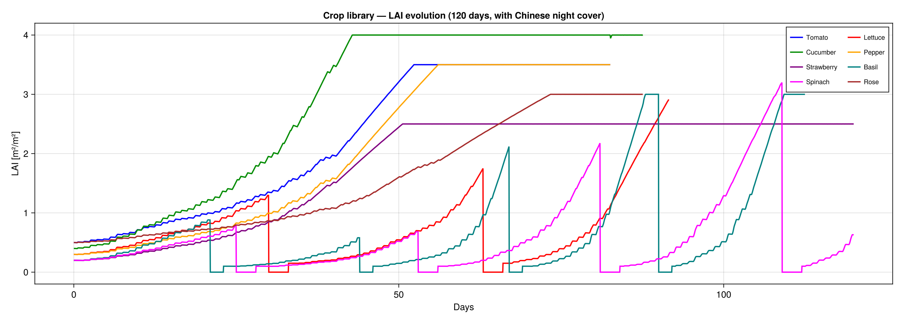
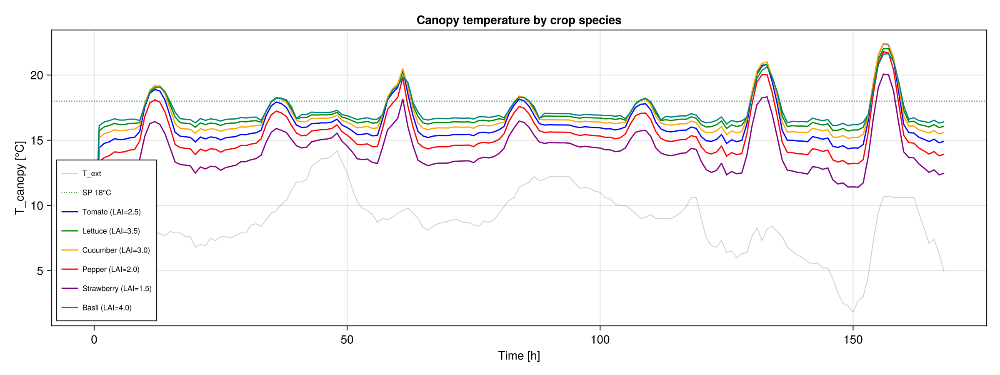

Tutorial: Crop Species Library
GreenhousesJL includes 8 pre-configured crop species with growth parameters from the literature.
Available species
| Crop | LAI_0 | LAI_max | Cycle | Type | Constructor |
|---|---|---|---|---|---|
| Tomato | 0.5 | 3.5 | continuous | Fruit | CropModel() |
| Lettuce | 0.3 | 5.0 | 30d + 3d | Leafy | LettuceCrop() |
| Cucumber | 0.4 | 4.0 | 120d + 7d | Fruit | CucumberCrop() |
| Pepper | 0.3 | 3.5 | 150d + 7d | Fruit | PepperCrop() |
| Strawberry | 0.2 | 2.5 | continuous | Fruit | StrawberryCrop() |
| Basil | 0.2 | 3.0 | 21d + 2d | Herb | BasilCrop() |
| Spinach | 0.2 | 4.0 | 25d + 3d | Leafy | SpinachCrop() |
| Rose | 0.5 | 3.0 | continuous | Ornamental | RoseCrop() |
Quick usage
using GreenhousesJL
tmy = load_tmy("path/to/weather.txt")
# Just pick a crop preset
p = SavonaParams(tmy; crop=LettuceCrop())
sol = solve(ODEProblem(greenhouse_rhs!, initial_state(p), (0.0, 120*86400.0), p),
Tsit5(); reltol=1e-6, saveat=3600.0)Customising parameters
All parameters can be overridden:
# Lettuce with longer cycle and higher LAI
LettuceCrop(LAI_0=0.4, cycle_days=40, fallow_days=5)
# Fully custom crop
CropModel(
LAI_0 = 0.3,
dynamic_LAI = true,
SLA = 3.0e-5, # m²/mg, specific leaf area
LAI_max = 4.0, # m²/m², prune above this
rg_Leaf = 0.10, # mg/(m²·s), leaf growth rate at 20°C
rg_Stem = 0.05, # mg/(m²·s), stem growth rate
r_s0 = 180.0, # s/m, base stomatal resistance
Vcmax25 = 100.0, # µmol/m²/s, Rubisco capacity
Jmax25 = 200.0, # µmol/m²/s, electron transport
cycle_days = 60.0, # days between harvests
fallow_days = 5.0, # bare soil after harvest
)120-day growth curves

Each crop shows its characteristic growth pattern:
- Tomato, Strawberry, Rose: continuous growth to LAI_max
- Lettuce, Basil, Spinach: visible harvest/replanting cycles (LAI drops to 0 periodically)
- Cucumber, Pepper: single long cycle with harvest at 90–150 days

Combining crops with insulation and PV
All features compose:
p = SavonaParams(tmy;
with_walls = true,
crop = LettuceCrop(cycle_days=30),
panel = SemiTransparentPanel(τ=0.4, coverage=0.5),
cover = ChineseCover(),
walls = InsulatedNorthWall(),
)